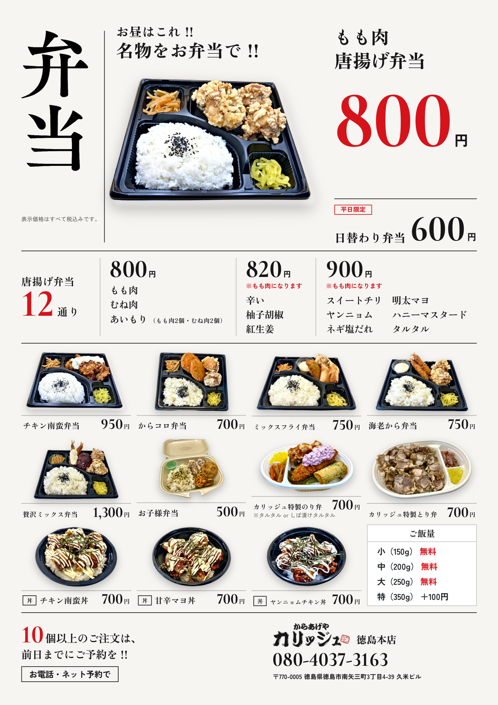

カリッジュ · メニュー表 C案
メニュー表の確認
画像をタップすると拡大できます。指で広げて、文字や写真の細部をご確認ください。
更新：2026/10/02 15:46（日本時間）
徳島本店
TRIAL板野店
徳島本店
2枚まとめてPDFで開く
1枚目 · 単品
画像を拡大 ↗
2枚目 · 弁当
画像を拡大 ↗

TRIAL板野店
2枚まとめてPDFで開く
1枚目 · 単品
画像を拡大 ↗
2枚目 · 弁当
画像を拡大 ↗